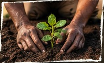
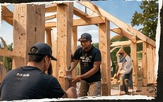
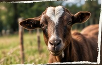
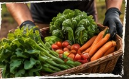

Training Programs
Hands-on education for real-world skills in agriculture, sustainability, and farm operations.
Learn More →Boots Rooted provides hands-on agricultural training by building real, functioning farms. Our unique model creates farmers and creates farms while strengthening communities and expanding access to sustainable food systems.
Hands-on education for real-world skills in agriculture, sustainability, and farm operations.
Learn More →Partner with us to turn your land into a working farm and a learning opportunity.
Become a Host →Our program is open to everyone, with tuition free for veterans.
Apply Now →Support a stronger, more sustainable future through partnership and sponsorship.
Support Our Mission →Boots Rooted trains and empowers individuals to design, build, and operate sustainable farms while simultaneously creating functioning farms that serve communities. We believe in hands-on learning, real-world impact, and a future where more people have access to land, food, and the skills to be self-sufficient.
Learn More About Our Mission →Boots Rooted began with a commitment to help veterans find purpose through hands-on agriculture. That vision has grown into a program open to everyone. We bring people together to learn practical skills while building farms that can serve their communities for years to come.
Explore Training Programs →
Real skills. Real experience.
In the field.

Functioning farms.
Lasting infrastructure.

Food, opportunity,
and stronger communities.

Farmers. Farms.
A brighter future.